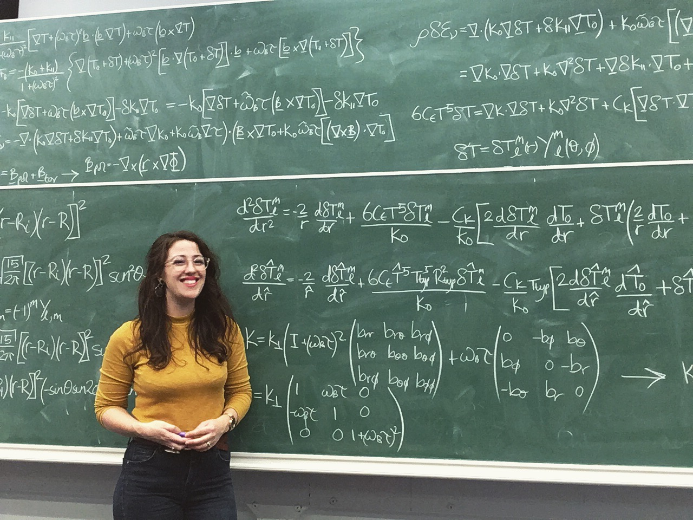

Hi! My name is Emma and I'm a relativistic astrophysicist. I find gravity truly fascinating, so I decided to study for a PhD in general relativity at the University of Southampton. I'm researching how neutron stars (a type of dead star) produce gravitational waves by growing mountains. With my love of physics and all things sciencey, I have found I have a huge desire to share my passion with the world. I enjoy the challenge of breaking down scientific concepts in a way that makes them accesible to everyone. I think science is amazing and I want to show you just how awesome science actually is!
